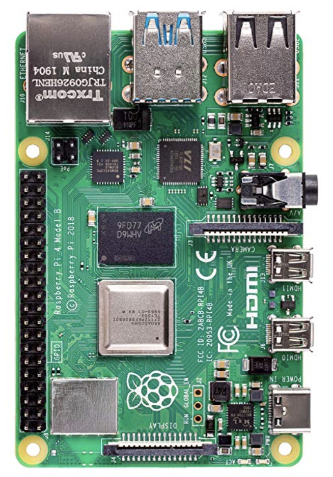
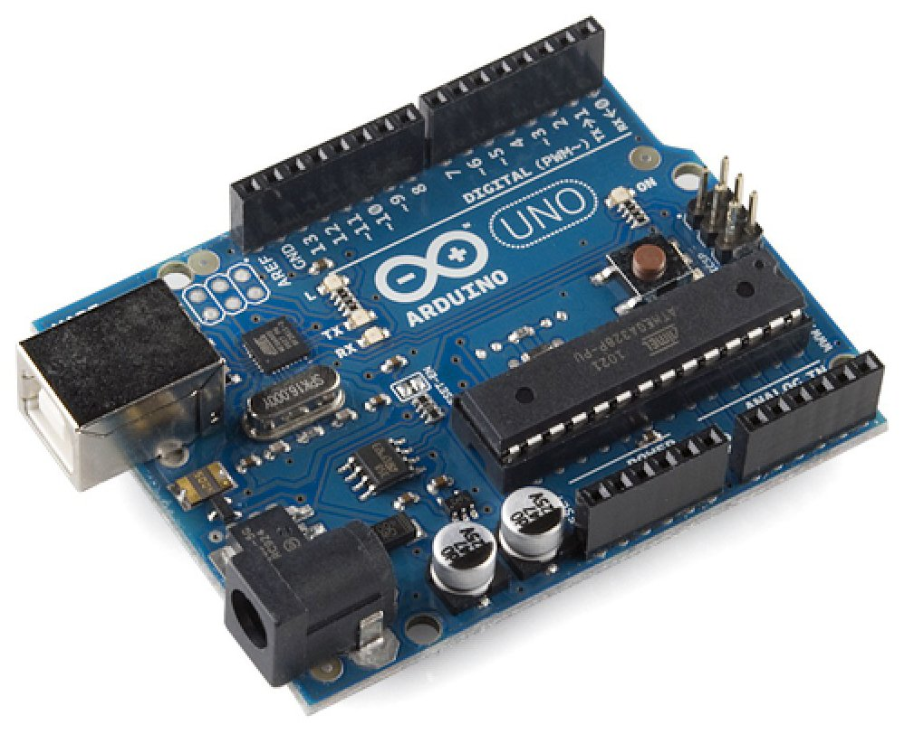
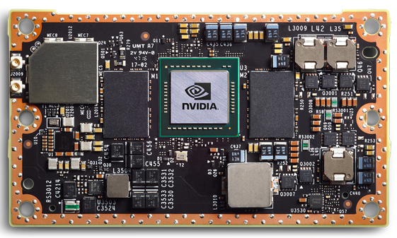
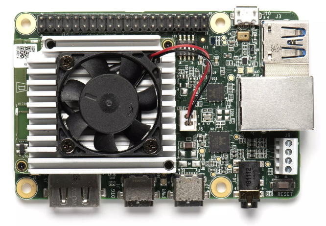
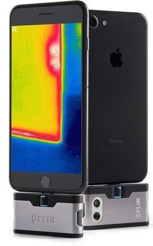
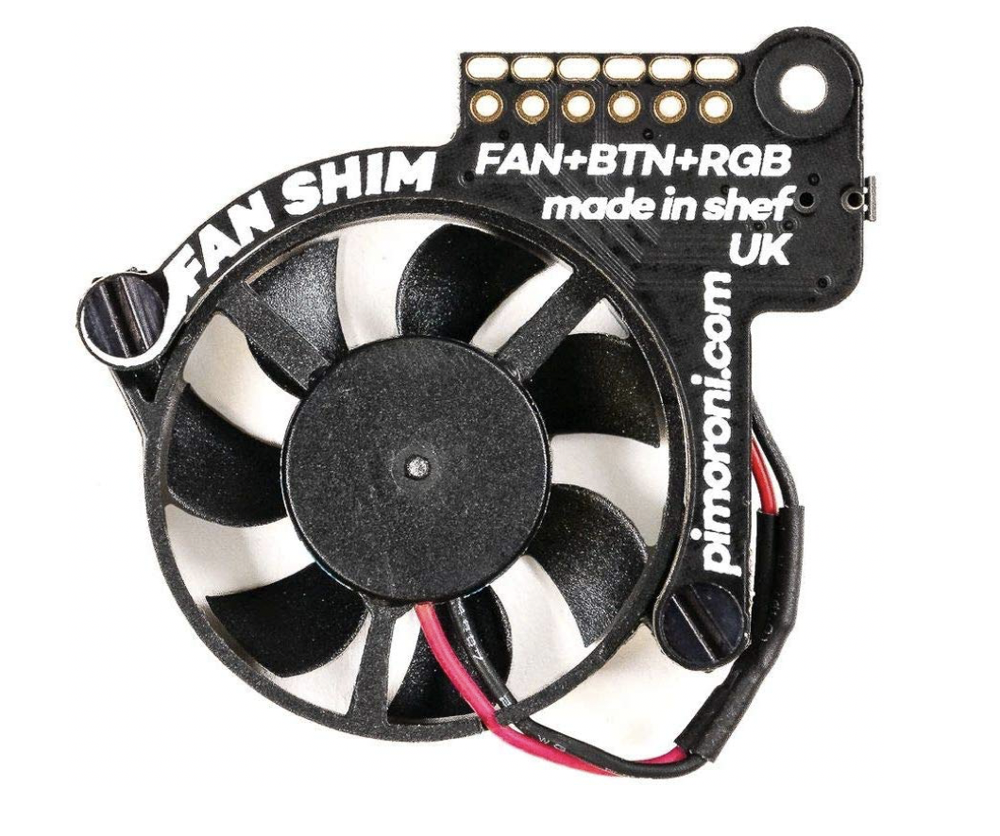

The CODE Lab aims to explore in-depth understanding of Cloud, BigData and Edge computing systems and related services, and develop advanced technologies to enhance the system performance, reliability and scalability. The research was supported in part by Kennesaw State University and National Science Foundation.
The CODE Lab is located in the J building of Marietta campus.
| Faculty | Graduate students | Undergraduate students | Alumni |
|---|---|---|---|
| Dr. Kun Suo |
|
|
|
| Project Name | Introduction | Case Study/Demo |
|---|---|---|
| Optimizing operating system kernel for high performance container network | While the debate on user-space networking and in-kernel networking continues, user-space network stacks will eventually encounter similar issues facing the OS kernel today, when needing to make a tradeoff of throughput and latency, support resource sharing and guarantee performance isolation. Therefore, it is imperative to develop a fundamental understanding of the inefficiencies of commodity OSes in handling packets from high-speed devices and in virtualized networks. This project aims to greatly improve the throughput and latency, especially the tail latency, of the conventional network stack in commodity OSes. Unlike the existing research on optimizing the kernel network stack, this proposed research aims at a holistic study of the OS kernel in packet processing, including interrupt handling, the protocol stack, the thread scheduler, and their complex interplay. It will systematically study three types of bottlenecks: serialization, long critical path and idleness, and identify the causes of throughput loss, degraded average latency and spikes in tail latency. | |
| Mitigating startup latency via reusing container runtimes | During the past few years, serverless computing has changed the paradigm of application development and deployment in the cloud due to its unique advantages, including easy administration, automatic scaling, built-in fault tolerance, etc. Nevertheless, serverless computing is also facing challenges such as long latency due to the container cold start. In this project, we propose HotC, a container-based runtime management framework which leverages the lightweight containers to mitigate the cold start and improve network performance of serverless applications. HotC maintains a live container runtime pool, analyzes the user input or configuration file, and provides available runtime for immediate reuse. Our evaluation results show that HotC introduces negligible overhead and can efficiently improve the performance of various applications in both cloud servers and edge devices. | |
| System resources utilization of ML/AI on the edge |
Cloud virtual machine: raw data, html data, video Raspberry pi 4: raw data, html data, video, cpu data, mem data |
|
| Data-driven execution for low energy edge computing | Details to be announced later... |
| Raspberry pi 4 | Arduino |
Nvidia Jetson TX2 |
Google Coral |
|  |  |  |  |
| Thermal camera | Programming fan |
TBA |
TBA |
|  |  |
CCSE Purchasing Policy and Guidelines
Team Georgia Marketplace Quote Website
{kind=link}
{kind=link}
{kind=link}
{kind=link}